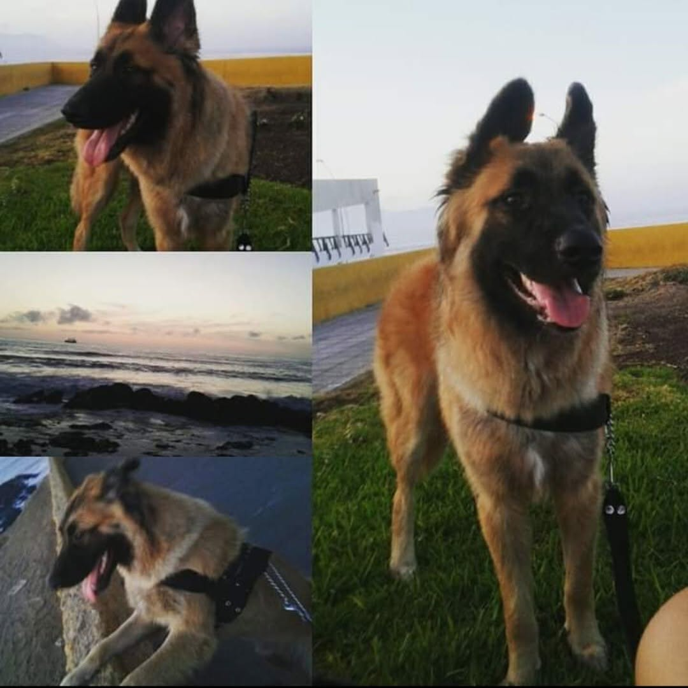
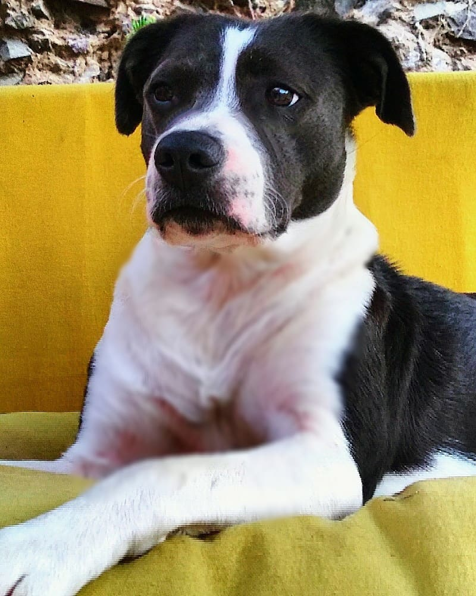
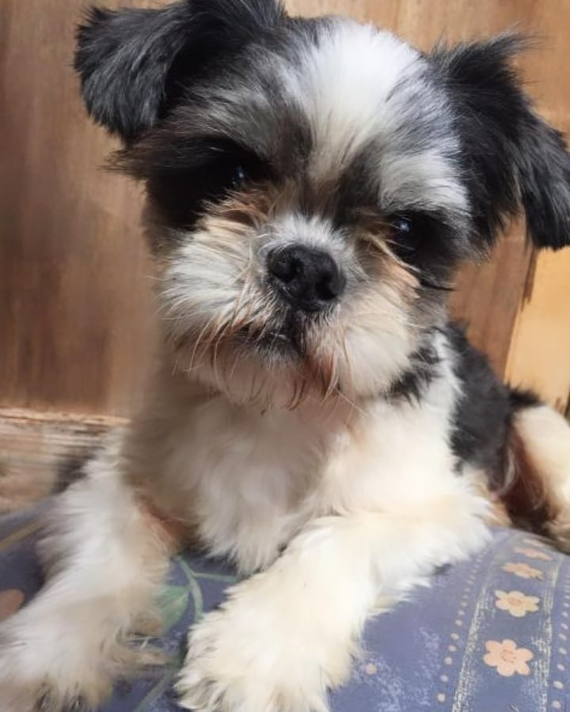

Conoce a mis peludos o mis cachorros como le dice la gente: Leon,
Mushka, Max y Luck.
Leon
Leon es una cruza de pastor alemán que recogimos de una camada de perritos que fueron botados en la
plaza El Olivar, Antofagasta.
La idea principalmente era darlo en adopción, pero al final nos quedamos con él.
Es un perrito muy serio y muy juguetón, muy protector con nosotros y con sus demás hermanos.

Collage de leon en la costanera
Cosas que le gustan a Leon
Jugar con sus pelotas
Salir a pasear
Mojarse con la manguera en el patio
La coca-cola
Cosas que no le gustan a Leon
Los fuegos artificiales
No le gusta bañarse
No le gustan los desconocidos
No le gusta que el gato toque su comida
Mushka
Mushka es una perrita mestiza de pitbull que una agrupacion recogio en isla santa maria,
Antofagasta.
La adoptamos cuanto tenia 1 mes y medio y desde entonces se quedo con nosotros
Es una perrita muy cariñosa y un poco miedosa, pero cuando esta con sus hermanos es muy protectora.

Mushka sentada en el patio de la casa
Cosas que le gustan a Mushka
Jugar con sus hermanos
Bañar al gato
Salir a pasear
Dormir al sol
Cosas que no le gustan a Mushka
Los ruidos fuertes o los fuegos artificiales
No le gusta bañarse
Ir al veterinario
Y no le gusta que le toquen su guatita
Max
Max es un perrito mestizo de shit-zu, un dia paso un auto y lo tiraron para deshacerce de el
La idea era darlo en adopcion para que tuviera una mejor vida, ya que cuando lo tiraron del auto el ya tenia una avanzada edad
Como nadie quiso adoptarlo, se quedo con nuestra familia, es un perrito muy cauteloso, valiente y jugueton.

Max acostado en la cama
Cosas que le gustan a Max
Dormir en mi cama
Salir a pasear
La comida humeda y blandita
Cosas que no le gustan a Max
Los fuegos artificiales
No le gusta bañarse
No le gusta que le toquen sus patitas
No le gusta el vet
Luck
Luck es un perrito de raza poodle bichon, el fue adoptado desde que era muy pequeño
es un perrito muy cariñoso, alegre, jugueton, regalon y muy valiente
Las malas lenguas perrunas dicen que el es el lider de la manada